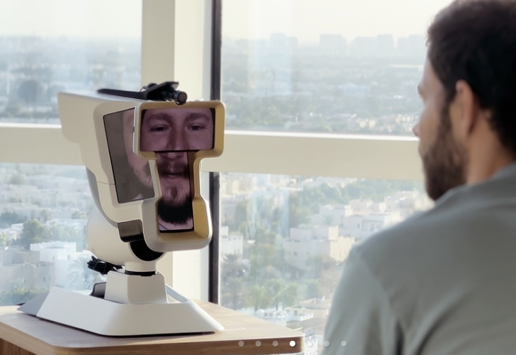

Wehead: the weirdest way to put a face in a meeting.

Some products solve real problems. Others solve problems that only appear after you stare at a wall long enough. Wehead is firmly in the second category: a head-shaped video-call device that tries to make remote meetings feel more “present” by turning a call into… a tabletop head. In theory, the movement part makes sense. If the person on the other end can pan around a room and look at different people, that’s genuinely useful. The part that’s harder to explain is why we needed to build a whole haunted conference-room idol to do it.
Here’s the truly baffling design choice: instead of a head-sized screen, like an iPad sitting on the table, Wehead uses four phone-sized screens at different angles to show different parts of a face. It’s like taking a perfectly normal video chat and slicing it into quarters for no reason. Everything that could be shown on one screen is now shown on four, which is impressive in the same way it would be impressive to replace a fork with four smaller forks taped together. You can’t even pretend it’s subtle. It looks like a DIY art project that became self-aware.
If the main benefit is “the remote person can look around the room,” we already have an obvious solution. Put a phone or tablet on a little motorized stand and let the remote user steer it with an app. Done. Instead, Wehead turns a simple camera-movement feature into a wildly specific contraption that says, “Yes, we could have used a tablet, but what if we made it unforgettable in the exact way you’re thinking right now.” If you want to see the official version of this idea, here you go: wehead.dev